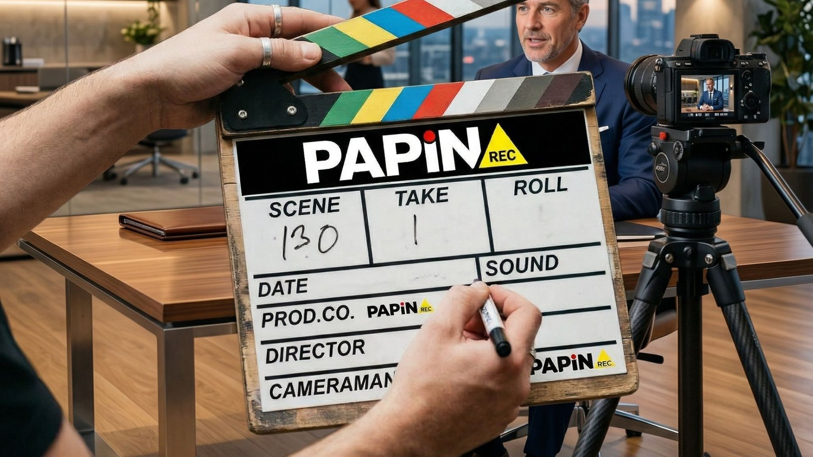

A engenharia visual que justifica o seu preço.
Nós não apenas apertamos o botão de gravar. Construímos a autoridade inquestionável que o seu negócio precisa pra fechar contratos de alto valor.
O seu serviço é premium. A sua imagem não.
Você perde vendas todos os dias porque a sua comunicação não passa a confiança necessária. O cliente olha para a sua empresa e não consegue enxergar a força, a escala e a qualidade que ela realmente tem.
Não é o produto, é a entrega
A diferença entre o projeto que esgota no lançamento e o que fica meses encalhado não é o produto em si. É como ele é embalado visualmente.
Amadorismo visual custa caro
Comunicação amadora afasta justamente os clientes que pagam mais, os que decidem comprar pela autoridade que enxergam antes de assinar.
O concorrente parece maior
Não deixe a sua empresa perder espaço e dinheiro para concorrentes que entregam muito menos, mas parecem maiores que você.
O que acontece antes do seu cliente dizer sim.
O mercado vê a emoção do comprador e o contrato assinado. Nós vemos estratégia. Nosso audiovisual não é baseado em intuição, é calculado pra gerar conversão.
Entendemos o seu negócio
Visitamos o seu território e mapeamos o que faz o seu cliente comprar antes de ligar qualquer câmera.
Narrativa antes do equipamento
Construímos a narrativa de impacto e retenção antes mesmo de abrir as malas de equipamento.
Do chão de fábrica ao luxo
Do chão de fábrica às coberturas de alto padrão, documentamos a grandeza do seu negócio com precisão.
Corte implacável
Um corte feito pra dominar a atenção, gerar desejo imediato e quebrar objeção antes que ela apareça.
Produção audiovisual com direção de marca.
Cuidamos da imagem que representa o negócio: do vídeo do dia a dia ao material institucional.
Vídeo para redes sociais
Gravação e edição de vídeos pensados pro ritmo das redes: Reels, Shorts e conteúdo recorrente.
Vídeo Institucional
Produção de vídeo institucional pra apresentar a empresa com a credibilidade que ela merece.
Cobertura de Eventos
Registro completo de eventos e ações da marca, do making of à entrega final editada.
Conteúdo que viraliza em nichos diferentes.
Três exemplos reais de vídeos produzidos pela Papin REC, cada um em um nicho diferente, todos com alcance orgânico.
 2,2 mi de visualizações
2,2 mi de visualizações
Mais de 2 milhões de views no orgânico
Vídeo produzido para o segmento de construção civil, com mais de 2 milhões de visualizações orgânicas.
 195 mil visualizações
195 mil visualizações
195 mil views no orgânico
Conteúdo gravado na Cross Over, com mais de 195 mil visualizações orgânicas no nicho fitness.
 457 mil visualizações
457 mil visualizações
Mais de 400 mil views no orgânico
Vídeo de humor e variedades gravado em loja de conveniência, com mais de 457 mil visualizações orgânicas.
Da obra ao empreendimento pronto.
Produções institucionais e de drone assinadas pela Papin REC.
Canteiro de obra em cenário perfeito
Transformamos até canteiro de obra em cenário perfeito, com captação aérea de drone.
Empreendimento em Itaquera
Empreendimento em Itaquera com iluminação de pôr do sol e o Estádio do Corinthians ao fundo.
A força bruta em números.
Traduzimos trabalho duro em autoridade visual.
Operação acelerada no coração de São Paulo, pronta pra escalar a autoridade visual da sua marca.